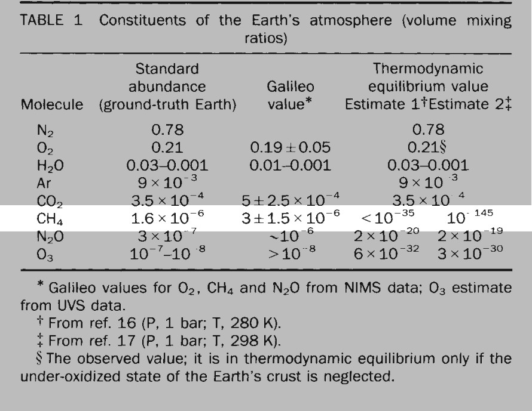

Life Detection
Earth practice

By considering principles of life we should be able to better detect life-like processes. In 1990, Sagan et al.
conducted an ad-hoc
life detection survey of Earth using the Galileo spacecraft during a gravitational assist maneuvre on its way to Jupiter. The experiment found, among other things, the presence of methane levels about 140 orders of magnitude higher than would be expected given the amount of oxygen present. In other words something in the atmosphere was staving off thermal equilibrium.